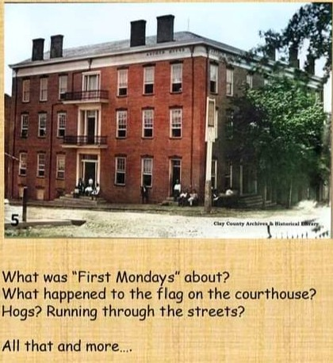
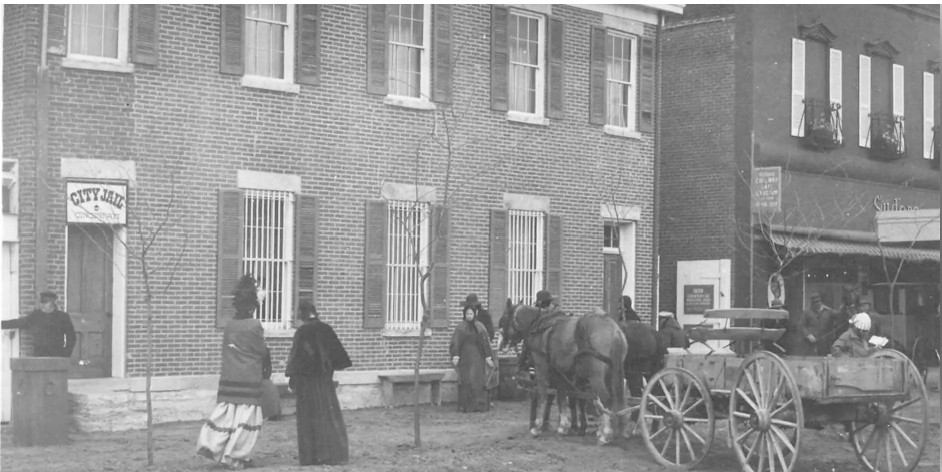
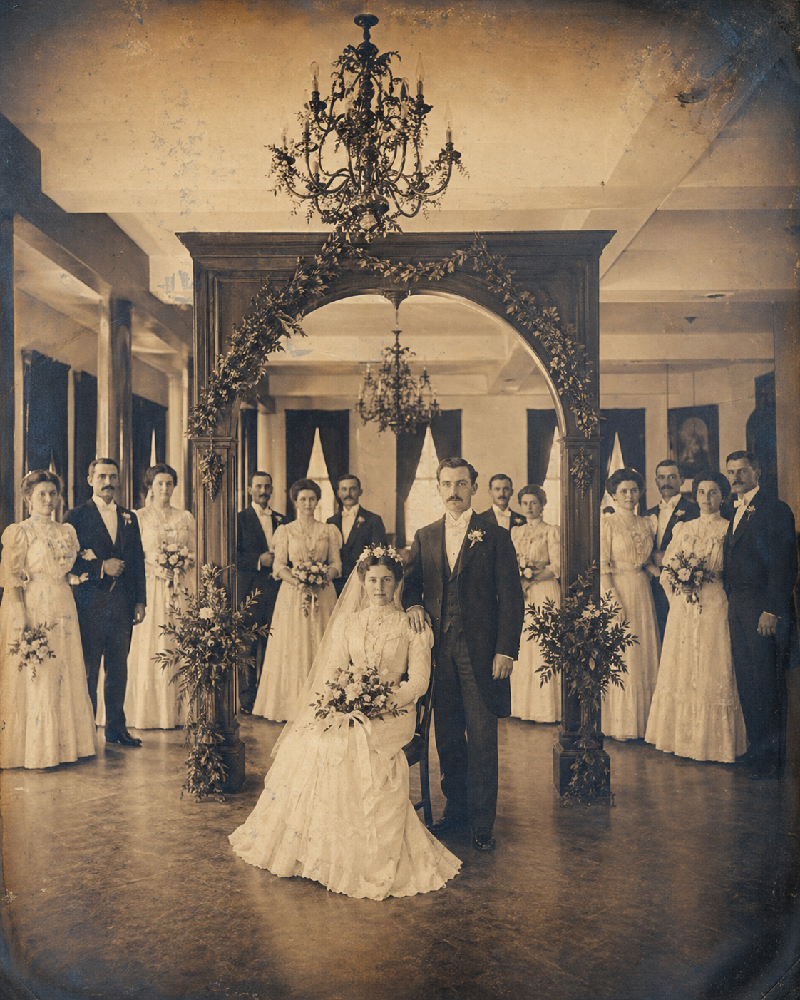
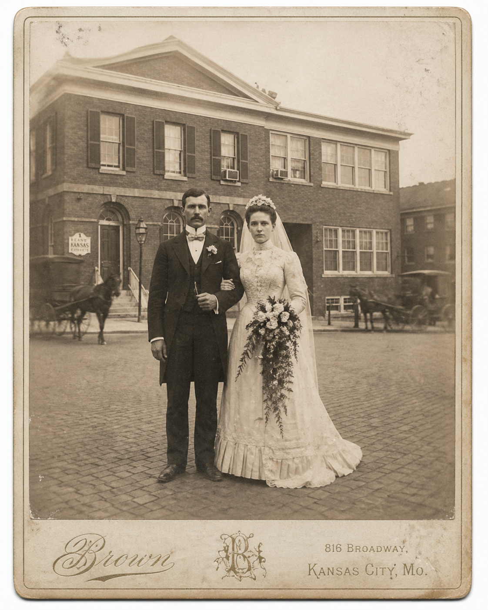
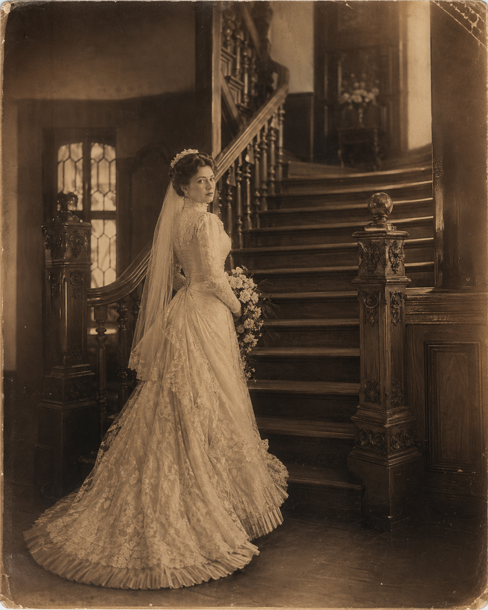

Historic Liberty Square
The Story Around 1894 Event Space
Before this room became a modern event space, Liberty Square was already a place where travelers, merchants, families, entrepreneurs, and civic leaders crossed paths.
The legends are around the Square. The legacy is in the room.
Plan an Event HereFrom Restoration 1894
The Address Goes Back to Liberty's Beginning
Restoration 1894's own history traces the 1 East Kansas site back to Liberty's founding era in 1822, when the land was part of the original county seat. The present building rose in 1894 after an 1893 fire ended the earlier hotel and store at the corner.
The ground floor carried a long commercial life through dry goods, furniture, undertaking, grocery, dime store, variety, appliance, antique, and gift shop chapters. Upstairs, the Knights of Pythias and later the Pythian Sisters helped give the room its Castle Hall identity, remembered by many for dances and events in the 1950s and 1960s.
View Original History


Archive Views
Liberty Square Has Always Been a Gathering Place


Origins
Built Into the Story of Downtown Liberty
The 1894 building stands inside a district shaped by trade, hospitality, courts, churches, schools, and generations of local business owners. It belongs to the kind of downtown where every storefront has carried more than one chapter.
Today, the space continues that pattern by giving people a room to meet, celebrate, learn, launch ideas, and gather around moments that matter.


Castle Hall
Preserved Character, Modern Gatherings
The venue carries the atmosphere people hope to find in a historic building: brick, wood, texture, height, light, and the feeling that the room has witnessed more than one generation of good stories.
Historic spaces do not need to pretend to have character. They already do.See the Venue Gallery


A Living Room for Liberty
The Next Chapter Is Still Being Written
1894 Event Space is not just a preserved room. It is a working place for new memories: family celebrations, business milestones, workshops, community nights, and the ordinary conversations that become important later.
Hosted by ACA Business Club Liberty, the space can keep serving the Square as both a destination and a resource for people building something in Liberty.



Then, Now, Next
From Historic Square to Modern Event Home

Every new event adds another layer to the story of the building and the Square.
Bring People Back to the Room
Host Your Own Chapter at 1894
Whether you are planning a celebration, workshop, business gathering, or community event, the room is ready for the next story.
Request AvailabilityHistoric Liberty Square, hosted by ACA Business Club Liberty.